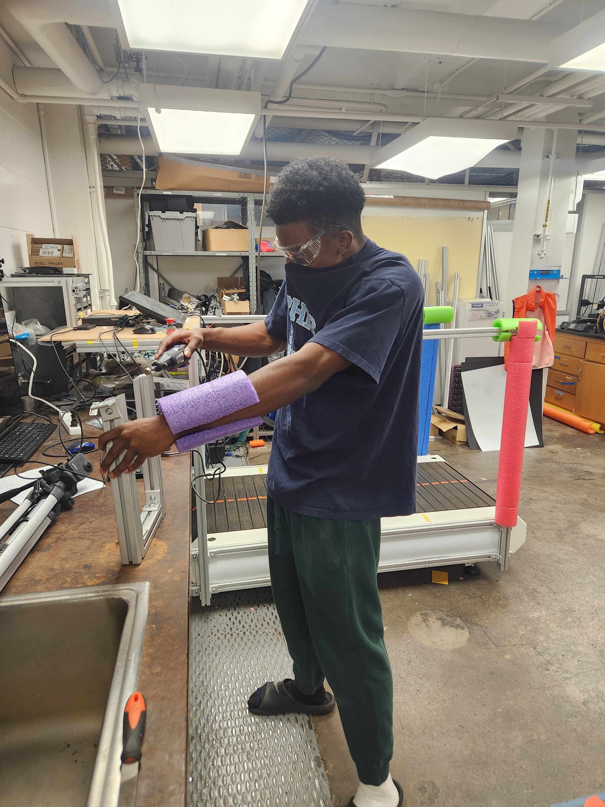
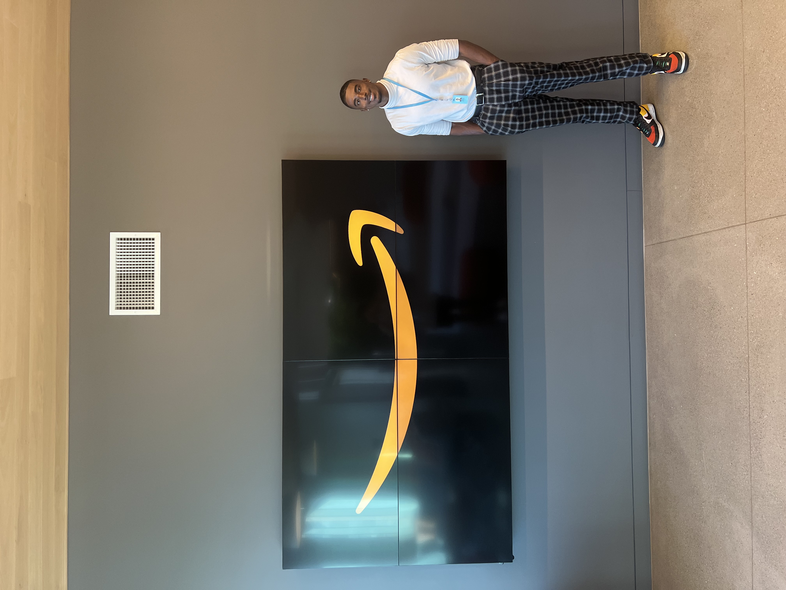
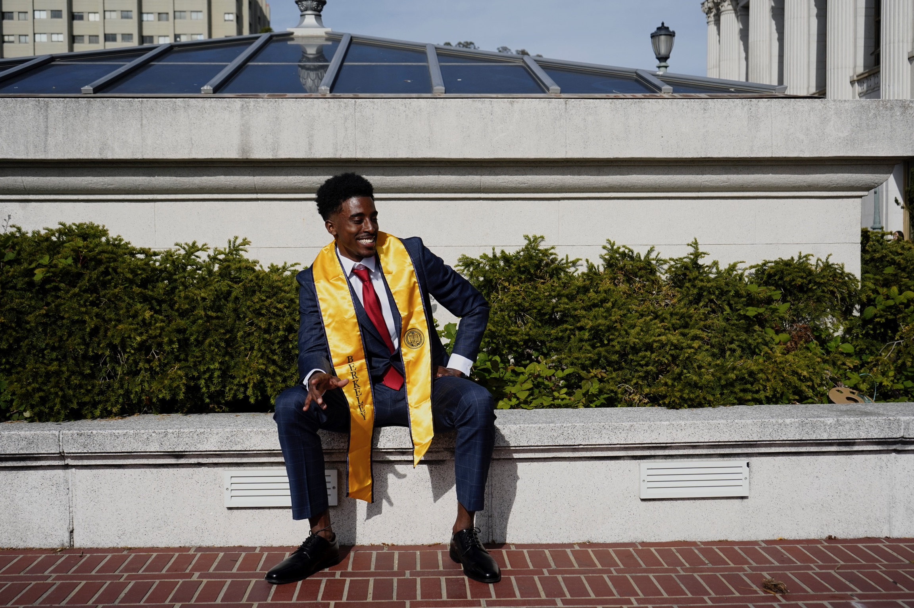

About Me

Background
- My name is Xavier Johnson and I graduated with a Master of Engineering from UC Berkeley in Spring 2025 and I graduted with a Bachelor's degree in Mechanical Engineering from UT Knoxville in Spring 2024. Before my Master's, I did a Mechanical Engineering Internship at ASML. In my years at the University of Tennessee I have completed 2 semester long internships, 2 summer internships, and worked with 3 different professors as an Undergraduate Research Assistant. Since I first came to college I felt an urge to learn more about the engineering world and let my curiosity loose. Doing this allowed me to be open for any new opportunity to learn even if it meant doing something I wasn't familiar with. In Fall 2020, I completed a design/quailty engineering co-op rotation with BSH Home Appliances. In Summer 2021 and Fall 2021 I did a mechanical engineering co-op with Siemens Healthineers. In summer 2022 I went to Califonia to do a hardware relability engineering internship with Amazon Lab 126. During this internship, I got a return offer as a Product Design Engineering intern working on future amazon products in Summmer 2023. During my years, I worked in three different Undergraduate Research Labs, the first I designed enclosures for electrical components for a six DOF arm, second I helped research how ABS transitions to TPU, my last one was researching how to design a microdroplet printer. During my last year of undergraduate studies I was a Lead Ambassador for the professional practice. The previous year I was the social media Ambassador and boosted all of our social media posts by nearly 3x their previous likes and interactions. I was able to interview very talented engineers and was able to help numerous students in their professional development. I honestly love engineering and am excited for the future wherever that may be.
My Goals

Statement of Purpose
- I want to get an engineering job with a company that constantly challenges its employees to be better. I want to work somewhere where the mission is to constantly evolve and innovate. I am a very passionate and ambitious engineer that wants to constantly improve his skills and strives to be the best at everything he does.
I decided to major in Mechanical Engineering because I didn't want to be a one-dimensional engineer. I want to be able to have the versatility to work in any sector and become a valuable piece to a company. I am currently interested in robotics, mechatronics, AI technology, product design and development, and other fields.
Motivation
- I strive to be the greatest at everything I do because I don't want to sell myself short. Since I was a kid, I worked and worked to get to where I am today and that fire will never run out. My favorite quote is "Hard work beats talent, when talent doesn't work hard". I may not know everything but that's what fuels me to work so hard. I love being the underdog, I've been an underdog since the day I was born and I love it. I want to a get a point where I can inspire kids who were like me. I understand that I can't do that overnight so for now I'm going to start by being a role model for my little cousins and proving to them that anything is possible if you work hard enough.
Engineering Vol

Engineering Bear
